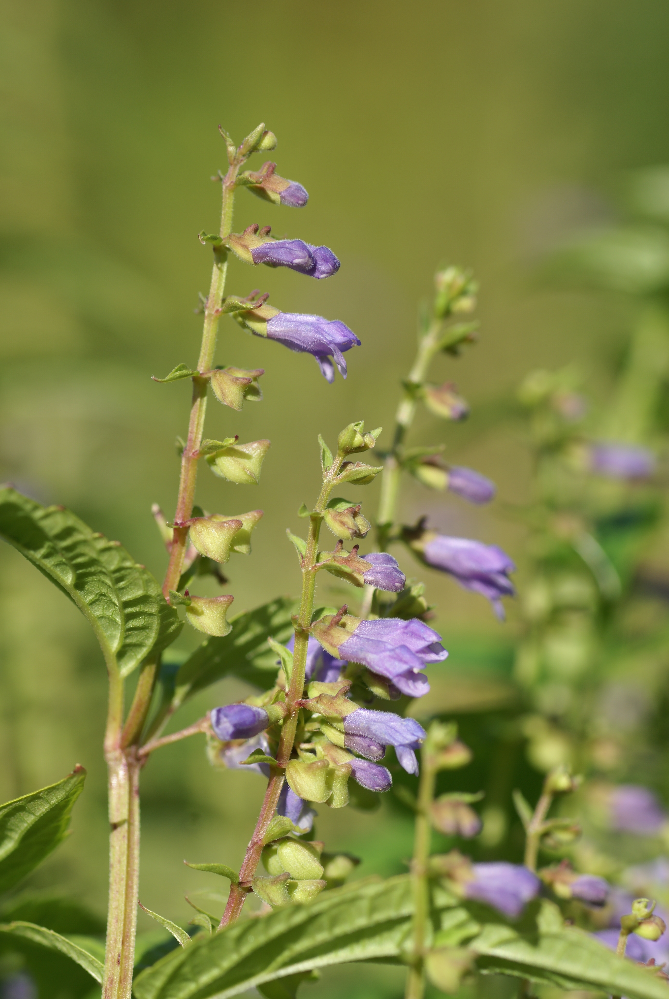

Scutellaria lateriflora
| common name | skullcap | |
| en español | casida, escutelaria | |
| plant family | Lamiaceae (mint) | |
| parts used | fresh and dried aerial parts |
 from Wikimedia Commons by By Rolf Engstrand - Own work, CC BY-SA 3.0
observations/description
dried leaves
- small pieces of leaf and stem, colors from light green to emerald
- soft aroma, slightly nutty, a little reminiscent of vervain
"Scutellaria lateriflora", Wikipedia
- square stems
- opposite leaves with serrated margins
- blue flowers
- most of the flowers do not appear at the top of the main stem but are produced along the length of side branches that grow from the leaf axils
distribution/conservation status
"Scutellaria lateriflora", Wikipedia
- native to North America
- listed as 'Least Concern' on the IUCN Red List of Threatened Species
- listed as 'Secure' by NatureServe
primary actions
The Yoga of Herbs, p. 147
- nervine, antispasmodic, sedative, alterative
Spiritual Herbalism, p. 156-7
- nervine tonic, antispasmodic, hypotensive, sedative, analgesic, emmenagogue
The Modern Herbal Dispensatory, p. 301
- analgesic, antispasmodic, nervine, sedative, soporific, hypnotic
The New Age Herbalist, p. 73
- nervine tonic, bitter, antispasmodic
notes from class, 27 May 2025
- analgesic, antispasmodic, anxiolytic, mild bitter, sedative, nervine, nervine tonic (fresh plant only)
system affinities
nervous, muscular
primary uses
The Yoga of Herbs, p. 147
- calming herb, good for lowering high pitta and reducing the fiery emotions of anger, jealousy, and hatred
- calms the heart and dispels excessive desire
- has a sattvic quality: promotes awareness, clarity, and detachment
- allays excitability and restores control over deranged sensory and motor functions
- with gotu kola in equal parts to improve awareness and promote perception
- with ashwagandha (1:4 ashwagandha:skullcap) as a nerve tonic
- with bitter herbs (e.g., gentian) to reduce pitta
- supports urinary and seminal incontinence
- indicated for insomnia, convulsions, tremors, muscular spasms, neuralgia, epilepsy, neurosis, nervous headaches, hypertension, headaches, arthritis
Spiritual Herbalism, p. 156-7
- useful for stress and anxiety and related diseases in the body
- fierce protective force that grounds an overactive nervous system
- cooling: great for hot conditions like panic or anxiety attacks
- indicated for anxiety, stress, high blood pressure, insomnia, headaches, neuralgia
- antispasmodic and helpful with epileptic siezures
- supports withdrawal from substances and habits
- supports working through emotions like fright, shock, pain, PTSD
- as a nervous system tonic for people who are exhausted mentally
- particularly good for someone nearing a nervous breakdown experiencing heart racing, tense muscles, panic attacks
The New Age Herbalist, p. 73
- excellent tonic for the nervous system
- good for treating anxiety, depression, insomnia, nervous headaches
- bitter: strengthens and stimulates digestion
- reputation for treating epilepsy and rabies
The Modern Herbal Dispensatory, p. 301
- relaxing nervine
- calms brain function, helpful for insomnia and chronic stress
- good remedy for tension headaches and migraines
- used for hysteria, epilepsy, convulsions, schizophrenia
- specific for nervousnessness/hysteria manifesting itself in involuntary muscular action
- helpful for those with an inability to pay attention or experiencing dull headaches in the front or base of the skull
- also indicated when these symptoms are worse with noise, odors, or light and improved with rest
- also for those who fell as if every sound, touch, and ray of light is personally attacking them
- works best as a tonic when tinctured fresh
- dried skullcap has a more sedative action
notes from class, 27 May 2025
- relaxing nervine, grounding
- most active within 3-4 months of harvesting
- more reliably sedative/relaxing when fresh
- good where there is stuck energy/blockages, constant state of stress, tension/exhaustion
- good for people who need to release control
- soothes nervous tension and renews/revitalizes central nervous system
- opens up the ability of the body to release tension, encourages stress to move around/leave
- indicated for stress-induced/tension headaches, high blood pressure related to stress, chronic depression/fatigue leading to debility of the nervous system
energetics
The Yoga of Herbs, p. 147
- reduces pitta, kapha; increases vāta (in excess)
- bitter taste - pungent post-digestive effect
- cooling
Spiritual Herbalism, p. 156-7
- bitter, cool
The Modern Herbal Dispensatory, p. 301
- cooling, relaxing
notes from class, 27 May 2025
- earthy, bitter, sweet
pharmacology
Spiritual Herbalism, p. 156-7
- flavonoids, bitter iridoids, volatile oils, tannins
The New Age Herbalist, p. 73
- flavonoid glycosides (incl. scutellonin, scutellanein), volatile oil, bitter principles, tannin
contraindications/pharmaceutical interactions/warnings
The Yoga of Herbs, p. 147
- high vāta, deficient vāta, severe nerve deficiency
Spiritual Herbalism, p. 156-7
- during pregnancy, use in small amounts and in formulation with other herbs to balance its energy
- may interact with pharmaceuticals taken for any mental illnesses
- highly sedative: use caution when taking during the day or while driving/operating machinery
The New Age Herbalist, p. 73
- large doses may cause dizziness, mental confusion, erratic pulse
The Modern Herbal Dispensatory, p. 301
- no known warnings
preparations
The Modern Herbal Dispensatory, p. 301
- standard infusion
- dried leaf and flower, 30 g: 1 L
- tincture
- fresh aerial parts, 1:2, 95% alcohol
- recently dried leaf and flower, 1:5, 60% alcohol
- glycerite
- dried herb, 1:6
Herbal Materia Medica, p. 34
- standard infusion
- recent herb, 1:32
- tincture
- fresh herb, 1:2
- recently dried plant, 1:5, 50% alcohol
The Herbal Medicine-Maker's Handbook, p. 110, 156, 192
- hot infusion
- recently dried plant, 2-5 g: 8 oz
- tincture
- fresh herb, 1:1.75 or 1:2, 100% alcohol
- recently dried herb, 1:5, 45-60% alcohol
- glycerite
- fresh herb, 1:1.75 or 1:2, 90% glycerin
The Yoga of Herbs, p. 79, 147
- hot infusion
- fresh herb, 1:4 (strong)
- fresh herb, 1:8 (moderate)
- cold infusion
- fresh herb, 1:4 (strong)
- fresh herb, 1:8 (moderate)
- powder
dosage
The Modern Herbal Dispensatory, p. 301
- standard infusion: 4-8 oz, 3/day
- tincture: 10 drops-5 mL, 2-4/day
- glycerite: 2-5 mL, 2-4/day
Herbal Materia Medica, p. 34
- standard infusion: 2-6 oz, up to 3/day
- tincture: 20-60 drops, up to 3/day
The Herbal Medicine-Maker's Handbook, p. 110, 156, 187
- hot infusion: 8 oz, 3/day
- tincture: 1-3 mL, 3/day
- glycerite: 10-25 drops, 3-4/day
The Yoga of Herbs, p. 92, 147
- hot infusion: 2 oz, 3/day
- cold infusion: 2 oz, 3/day
- powder: 250-1000 mg, 3/day
notes from class, 27 May 2025
- tincture: 15-30 drops during the day, 30-60 drops at night
extra information
Spiritual Herbalism, p. 156-7
- used by the Cherokee to stimulate menses and bring the afterbirth or placenta
- used to cure rabies in the 1970s, giving it the names 'maddog' and 'madweed'
personal experiences/simples
macerate (1 tbsp: 16 oz, 12 hours), dried leaf
- greenish golden hue
- aroma is still soft but more lively, almost sultry; complexity is in lower notes than i am used to from Lamiaceae plants
- body is pleasant, sweet, accompanied by gentle bitterness
- flavor reminds me of vervain as well, would pair nicely together
- feels grounding; again much more of a downward energy than i am used to for this family
- air/earth rather than air/æther
- reflects saturnian nature: invites stillness not through affecting the mind directly (e.g., with focus, intellectual clarity, etc.) but by encouraging a connection to or investigation of 'reality' (e.g., what is the reality of these thoughts/emotions?)
- akin to the grounding of lemon balm but much more serious, no levity detected
- i feel calmness, slowing down, present
- friend
witchcraft
Spiritual Herbalism, p. 156-7
- helps handle the immediacy of change
- keeps you centered
- provides stillness in the middle of the storm so you can maintain perspective
- useful when we need to freeze everything around us
- helps us remain cool and get things done regardless of outer circumstances
- teaches how discipline in fluidity can look
- planetary influences: saturn, water
The Witch's Encyclopedia of Magical Plants, p. 276-7
- used in purification cermonies for girls entering womanhood
- elements: water
- astrological influence: aquarius, capricorn, virgo, pluto, saturn
recipes
sources
Easely, Thomas and Steven Horne. The Modern Herbal Dispensatory (2016)
Frawley, David and Vasant Lad. The Yoga of Herbs: An Ayurvedic Guide to Herbal Medicine (1986)
Goldberg Blackthorn, Samantha and Shona MacDougall. Ace of Cups Herbal Medicine and Botanical Magic Herbal School (2024)
Green, James. The Herbal Medicine-Maker's Handbook: A Home Manual (2000)
Kynes, Sandra. The Witch's Encyclopedia of Magical Plants (2024)
Mabey, Richard et al. The New Age Herbalist (1988)
Moore, Michael. Herbal Materia Medica, Fifth Edition (1995)
Rose, Karen M. The Art & Practice of Spiritual Herbalism (2022)
"Scutellaria lateriflora" on Wikipedia. Retrieved 13 June 2025.